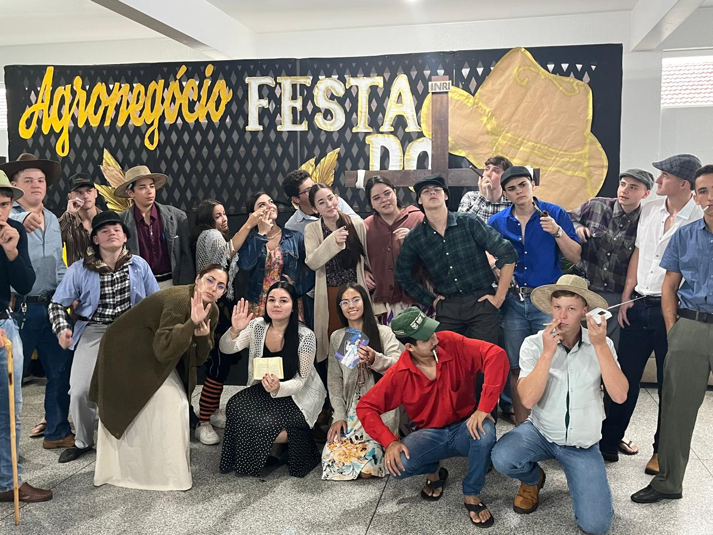
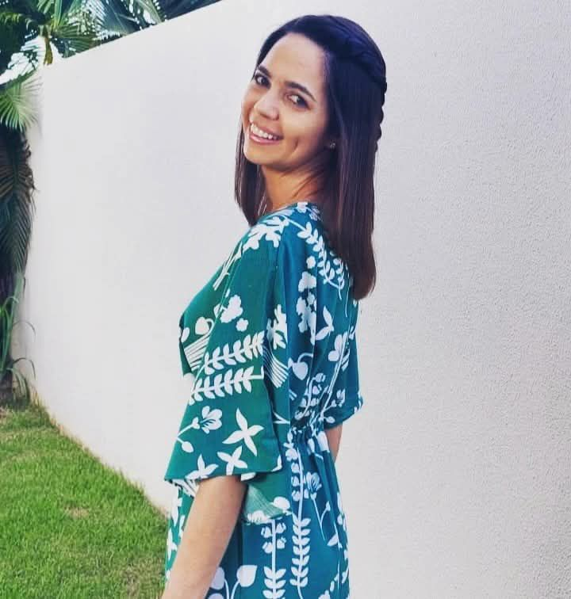
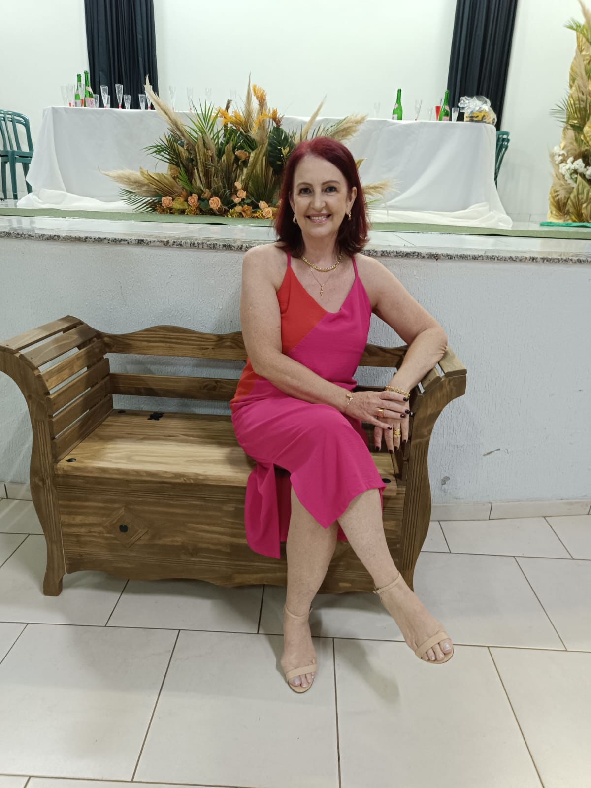

🕊️ Um passarinho nos contou que hoje é o Dia das Diretoras…
Mas antes de celebrarmos esse dia tão especial, temos algo ainda mais
emocionante pra lembrar:
a nossa trajetória até aqui.
⏳ Faltam
para o fim das aulas!
(Encerram em 19 de dezembro de 2025)
💙 Mas não precisam ficar tristes...
A gente vai continuar aqui, dentro dessa instituição,
e com certeza vivendo no coração de vocês por muito tempo!
Continuem acompanhando esse site e descubram o quão especiais vocês são —
o quanto vocês são incríveis e inspiram cada um de nós. 🌟
✨ Uma história que começou separada, mas se uniu para fazer história.
No 1º ano do Ensino Médio, tudo ainda era novidade. A gente estava
aprendendo como era o colégio, como eram as provas e, claro, como era
acordar cedo todos os dias. As turmas 1ºA e 1ºB seguiam
seus caminhos separadas — e, sinceramente, ninguém sabia muito bem o que
esperar. Estávamos imaturos, cheios de energia e com a cabeça em qualquer
lugar, menos em prova. 😅
Nessa época, ninguém precisava se preocupar com o SAEB, com o
ENEM ou com aquela tensão toda de futuro. A maior preocupação era
lembrar de trazer o uniforme completo e entregar o trabalho no prazo.
Mas aí vieram as férias do primeiro ano... e tudo começou a mudar.
Voltamos diferentes. Começaram as provas, os
trabalhos, o famoso blá blá blá do ENEM, do SAEB e da Prova
Paraná. A ficha começou a cair: agora era pra valer!
No 2º ano do Ensino Médio, então, meu Deus... adrenalina pura!
Parecia que a gente já estava dentro da faculdade. Era
ENEM pra cá, SAEB pra lá, Prova Paraná no meio e aquele
monte de simulados que deixavam o coração acelerado. Mas, ao mesmo tempo,
foi o ano em que tudo se uniu. As turmas se juntaram, nascia o
2ºB de Exatas — e foi aí que a gente percebeu que estava construindo
algo especial.
O 2ºB se tornou referência na escola: destaque em
nota, presença e desempenho. Era orgulho puro! E nada disso
teria acontecido sem a ajuda de quem sempre esteve por perto — nossas
pedagogas, professores e, claro, as nossas incríveis diretoras,
Liliana e Rosalba.
E agora, aqui estamos: o 3ºB de Exatas. Participamos do
SAEB, estamos chegando no ENEM e com um pé (ou os dois 😅) na
universidade. Alguns vão para faculdades presenciais, outros para
cursos online, tem quem vá pra federal, estadual e até
particular. Cada um seguindo seu caminho, mas todos com uma base
sólida construída aqui.
Os destinos da nossa turma já estão se desenhando, e tudo isso é reflexo da
dedicação de uma equipe maravilhosa. Graças aos nossos
pedagogos, aos professores e às nossas diretoras
Liliana e Rosalba, tudo isso se tornou realidade. Porque, sem
elas, a escola não teria brilho. Sem elas, a escola não teria o mesmo
coração. 💙
E foi assim que uma turma que começou separada… se uniu para fazer história.

👵👴 Nosso trote do terceirão — porque o 3ºB vive intensamente, até quando vira “idoso”! 💙
💛 Nossas líderes, nossa inspiração
Hoje o agradecimento vai para quem esteve sempre presente, acompanhando
cada passo, orientando, acolhendo e acreditando em nós.

🎓 Liliana
Nossa diretora — exemplo de sabedoria, força e cuidado com cada
detalhe da escola.

🌼 Rosalba
Nossa vice-diretora — sempre com aquele olhar atencioso e aquela
energia que faz tudo acontecer do melhor jeito.
Obrigado por fazerem parte da nossa jornada — e por tornarem o colégio
um lugar de crescimento, aprendizado e memórias que vamos levar pra
sempre. 💙
🎥 Um presente inesquecível: nossas futuras profissões
Um dia antes da realização da nossa Prova do SAEB, no dia 22/10/2025,
recebemos uma surpresa que marcou nossos corações. 💙
A nossa diretora Liliana preparou, com muito carinho, um vídeo com as nossas
futuras profissões — um gesto cheio de amor, emoção e inspiração.
Teve riso, teve choro, teve orgulho e, acima de tudo, teve o reconhecimento do quanto
a escola transforma o nosso dia a dia.
Esse vídeo representa o impacto que o CEIMM e nossas diretoras têm em cada um de nós.
💫 Um vídeo preparado com amor, por Liliana — nossa diretora, nossa inspiração.
Obrigado por acreditar tanto em cada um de nós. 💙
🐦 O passarinho voltou para dar um último recado...
Se preparem para se emocionar e receber a nossa homenagem,
preparada com todo o amor e carinho pela Turma do 3º Ano B. 💙
E lembrando: como estava escrito na carta,
vocês precisam estar sendo gravadas neste momento, tá? 🎥
A gente está em prova — realizando mais um passo rumo às nossas universidades —
mas queremos ver a reação de vocês quando receberem essa surpresa.